要讲PoolThreadCache，先知道PoolThreadLocalCache是什么，其实他就是FastThreadLocal的子类，里面存的类型才是PoolThreadCache。
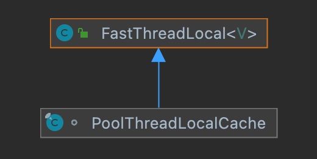
initialValue是获取初始化值的，也就是创建PoolThreadCache并返回。这里主要是useCacheForAllThreads 标签，是否是所有线程都可以用缓存，还是只能FastThreadLocalThread用缓存。当然如果有调度参数，可能还要启动调度任务，这个不是重点，暂时不说。
x1protected synchronized PoolThreadCache initialValue() {3 // ---看1.1步---4 //获取使用率最少的一个5 final PoolArena<byte[]> heapArena = leastUsedArena(heapArenas);6 // ---end---7 final PoolArena<ByteBuffer> directArena = leastUsedArena(directArenas);8
9 final Thread current = Thread.currentThread();10 //使用了useCacheForAllThreads或者是FastThreadLocalThread线程11 if (useCacheForAllThreads || current instanceof FastThreadLocalThread) {12 // 先尝试从缓存中获取13 final PoolThreadCache cache = new PoolThreadCache(14 heapArena, directArena, tinyCacheSize, smallCacheSize, normalCacheSize,15 DEFAULT_MAX_CACHED_BUFFER_CAPACITY, DEFAULT_CACHE_TRIM_INTERVAL);16
17 //有间隔的调度任务18 if (DEFAULT_CACHE_TRIM_INTERVAL_MILLIS > 0) {19 final EventExecutor executor = ThreadExecutorMap.currentExecutor();20 if (executor != null) {21 executor.scheduleAtFixedRate(trimTask, DEFAULT_CACHE_TRIM_INTERVAL_MILLIS,22 DEFAULT_CACHE_TRIM_INTERVAL_MILLIS, TimeUnit.MILLISECONDS);23 }24 }25 return cache;26 }27 // No caching so just use 0 as sizes.否则没有缓存28 return new PoolThreadCache(heapArena, directArena, 0, 0, 0, 0, 0);29} 获取线程使用数量最少的PoolArena，这样才能实现线程对内存的负载均衡，否则一个内存被多个线程用，其他的内存没有线程用，那使用效率就低了，还会引起严重的线程竞争问题。
151private <T> PoolArena<T> leastUsedArena(PoolArena<T>[] arenas) {2 if (arenas == null || arenas.length == 0) {3 return null;4 }5
6 PoolArena<T> minArena = arenas[0];7 for (int i = 1; i < arenas.length; i++) {8 PoolArena<T> arena = arenas[i];9 if (arena.numThreadCaches.get() < minArena.numThreadCaches.get()) {10 minArena = arena;11 }12 }13
14 return minArena;15} 只是里面放着各种缓存数据，缓存这一堆MemoryRegionCache类型的数组。
91// PoolThreadCache.java 属性2
3// Hold the caches for the different size classes, which are tiny, small and normal.4private final MemoryRegionCache<byte[]>[] tinySubPageHeapCaches;5private final MemoryRegionCache<byte[]>[] smallSubPageHeapCaches;6private final MemoryRegionCache<ByteBuffer>[] tinySubPageDirectCaches;7private final MemoryRegionCache<ByteBuffer>[] smallSubPageDirectCaches;8private final MemoryRegionCache<byte[]>[] normalHeapCaches;9private final MemoryRegionCache<ByteBuffer>[] normalDirectCaches;101private abstract static class MemoryRegionCache<T> {2 // 缓存数量3 private final int size;4 // 队列5 private final Queue<Entry<T>> queue;6 // 类型7 private final SizeClass sizeClass;8 // 已释放了多少个9 private int allocations;10}SizeClass：缓存了一个枚举。
121enum SizeClass {2 Tiny,3 Small,4 Normal5}6
7// 默认大小8// PooledByteBufAllocator.java9// cache sizes10DEFAULT_TINY_CACHE_SIZE = SystemPropertyUtil.getInt("io.netty.allocator.tinyCacheSize", 512);11DEFAULT_SMALL_CACHE_SIZE = SystemPropertyUtil.getInt("io.netty.allocator.smallCacheSize", 256);12DEFAULT_NORMAL_CACHE_SIZE = SystemPropertyUtil.getInt("io.netty.allocator.normalCacheSize", 64);allocations：表示缓存已经分配出去了多少个，这个在后面释放的时候会用到。
queue队列：是一个MpscArrayQueue多生产者单消费者的队列，也就是说可以多个线程放入数据，只有一个线程可以取数据。里面存的是Entry类型，这个有点让我想起了写操作的时候，也是将数据封装成Entry类型。
entry：一个回收处理器recyclerHandle，一个块信息，一个句柄，一个nioBuffer(一般都是null)。可见主要还是存哪个块的哪部分内存被缓存了。handle里就描述了很多信息，可以获得块内的偏移地址，子页偏移地址，子页等等。所以我们现在知道了， 缓存就是缓存块内对应的内存信息 。
171static final class Entry<T> {2 final Handle<Entry<?>> recyclerHandle;3 PoolChunk<T> chunk;4 ByteBuffer nioBuffer;5 long handle = -1;6
7 Entry(Handle<Entry<?>> recyclerHandle) {8 this.recyclerHandle = recyclerHandle;9 }10
11 void recycle() {12 chunk = null;13 nioBuffer = null;14 handle = -1;15 recyclerHandle.recycle(this);16 }17}591PoolThreadCache(PoolArena<byte[]> heapArena, PoolArena<ByteBuffer> directArena,2 int tinyCacheSize, int smallCacheSize, int normalCacheSize,3 int maxCachedBufferCapacity, int freeSweepAllocationThreshold) {4 checkPositiveOrZero(maxCachedBufferCapacity, "maxCachedBufferCapacity");5 this.freeSweepAllocationThreshold = freeSweepAllocationThreshold;6 this.heapArena = heapArena;7 this.directArena = directArena;8 if (directArena != null) {9 // ---看2.1步---10 //直接缓冲区的缓存11 tinySubPageDirectCaches = createSubPageCaches(12 tinyCacheSize, PoolArena.numTinySubpagePools, SizeClass.Tiny);13 // ---end---14 15 smallSubPageDirectCaches = createSubPageCaches(16 smallCacheSize, directArena.numSmallSubpagePools, SizeClass.Small);17
18 numShiftsNormalDirect = log2(directArena.pageSize);//获取2的次数19 // ---看2.2步---20 normalDirectCaches = createNormalCaches(21 normalCacheSize, maxCachedBufferCapacity, directArena);22 // ---end---23
24 directArena.numThreadCaches.getAndIncrement();//directArena线程缓存数+125 } else {//没有就设置默认值26 // No directArea is configured so just null out all caches27 tinySubPageDirectCaches = null;28 smallSubPageDirectCaches = null;29 normalDirectCaches = null;30 numShiftsNormalDirect = -1;31 }32 if (heapArena != null) {//堆内缓冲区33 // Create the caches for the heap allocations34 tinySubPageHeapCaches = createSubPageCaches(35 tinyCacheSize, PoolArena.numTinySubpagePools, SizeClass.Tiny);36 smallSubPageHeapCaches = createSubPageCaches(37 smallCacheSize, heapArena.numSmallSubpagePools, SizeClass.Small);38
39 numShiftsNormalHeap = log2(heapArena.pageSize);40 normalHeapCaches = createNormalCaches(41 normalCacheSize, maxCachedBufferCapacity, heapArena);42
43 heapArena.numThreadCaches.getAndIncrement();44 } else {45 // No heapArea is configured so just null out all caches46 tinySubPageHeapCaches = null;47 smallSubPageHeapCaches = null;48 normalHeapCaches = null;49 numShiftsNormalHeap = -1;50 }51
52 // Only check if there are caches in use.53 if ((tinySubPageDirectCaches != null || smallSubPageDirectCaches != null || normalDirectCaches != null54 || tinySubPageHeapCaches != null || smallSubPageHeapCaches != null || normalHeapCaches != null)55 && freeSweepAllocationThreshold < 1) {56 throw new IllegalArgumentException("freeSweepAllocationThreshold: "57 + freeSweepAllocationThreshold + " (expected: > 0)");58 }59} 这个就是创建子页类型的缓存数组，tiny类型默认是32个SubPageMemoryRegionCache，每个内部可以缓存512个Entry，small类型默认是4个SubPageMemoryRegionCache，每个内部可以缓存256个Entry。数组个数就是PoolArena中的，内存大小也是一一对应的。
141private static <T> MemoryRegionCache<T>[] createSubPageCaches(2 int cacheSize, int numCaches, SizeClass sizeClass) {3 if (cacheSize > 0 && numCaches > 0) {4 ("unchecked")5 MemoryRegionCache<T>[] cache = new MemoryRegionCache[numCaches];6 for (int i = 0; i < cache.length; i++) {7 // TODO: maybe use cacheSize / cache.length8 cache[i] = new SubPageMemoryRegionCache<T>(cacheSize, sizeClass);9 }10 return cache;11 } else {12 return null;13 }14} 对normal类型进行了控制，最多只能存maxCachedBufferCapacity 默认是32K的大小，也就是说可以存8K,16K,32K这3个档次，所以数组个数是3。
181private static <T> MemoryRegionCache<T>[] createNormalCaches(2 int cacheSize, int maxCachedBufferCapacity, PoolArena<T> area) {3 if (cacheSize > 0 && maxCachedBufferCapacity > 0) {4 //默认最多缓存maxCachedBufferCapacity=32K 不然太大了5 int max = Math.min(area.chunkSize, maxCachedBufferCapacity);6 //默认是37 int arraySize = Math.max(1, log2(max / area.pageSize) + 1);8
9 ("unchecked")10 MemoryRegionCache<T>[] cache = new MemoryRegionCache[arraySize];11 for (int i = 0; i < cache.length; i++) {12 cache[i] = new NormalMemoryRegionCache<T>(cacheSize);13 }14 return cache;15 } else {16 return null;17 }18} 在PoolArena的allocate方法理有3处：tiny、small、normal。
661// PoolArena.java2
3// 分配内存4private void allocate(PoolThreadCache cache, PooledByteBuf<T> buf, final int reqCapacity) {5 final int normCapacity = normalizeCapacity(reqCapacity);6 if (isTinyOrSmall(normCapacity)) { // capacity < pageSize7 int tableIdx;8 PoolSubpage<T>[] table;9 boolean tiny = isTiny(normCapacity);10 if (tiny) { // < 51211 // 分配tiny12 if (cache.allocateTiny(this, buf, reqCapacity, normCapacity)) {13 // was able to allocate out of the cache so move on14 return;15 }16 tableIdx = tinyIdx(normCapacity);17 table = tinySubpagePools;18 } else {19 // 分配small类型20 if (cache.allocateSmall(this, buf, reqCapacity, normCapacity)) {21 // was able to allocate out of the cache so move on22 return;23 }24 tableIdx = smallIdx(normCapacity);25 table = smallSubpagePools;26 }27
28 final PoolSubpage<T> head = table[tableIdx];29
30 /**31 * Synchronize on the head. This is needed as {@link PoolChunk#allocateSubpage(int)} and32 * {@link PoolChunk#free(long)} may modify the doubly linked list as well.33 */34 synchronized (head) {35 final PoolSubpage<T> s = head.next;36 if (s != head) {37 assert s.doNotDestroy && s.elemSize == normCapacity;38 long handle = s.allocate();39 assert handle >= 0;40 s.chunk.initBufWithSubpage(buf, null, handle, reqCapacity);41 incTinySmallAllocation(tiny);42 return;43 }44 }45 synchronized (this) {46 // 分配normal类型47 allocateNormal(buf, reqCapacity, normCapacity);48 }49
50 incTinySmallAllocation(tiny);51 return;52 }53 if (normCapacity <= chunkSize) {54 if (cache.allocateNormal(this, buf, reqCapacity, normCapacity)) {55 // was able to allocate out of the cache so move on56 return;57 }58 synchronized (this) {59 allocateNormal(buf, reqCapacity, normCapacity);60 ++allocationsNormal;61 }62 } else {63 // Huge allocations are never served via the cache so just call allocateHuge64 allocateHuge(buf, reqCapacity);65 }66}41boolean allocateTiny(PoolArena<?> area, PooledByteBuf<?> buf, int reqCapacity, int normCapacity) {2 //3.1.2 3.1.13 return allocate(cacheForTiny(area, normCapacity), buf, reqCapacity);4} 其中cacheForTiny，cacheForSmall，cacheForNormal也类似，我就拿cacheForTiny来说，其实就是获取对应类型的索引，看数组中是否存在该缓存，如果存在，就返回，否则就是null：
151private MemoryRegionCache<?> cacheForTiny(PoolArena<?> area, int normCapacity) {2 int idx = PoolArena.tinyIdx(normCapacity);3 if (area.isDirect()) {4 return cache(tinySubPageDirectCaches, idx);5 }6 return cache(tinySubPageHeapCaches, idx);7}8
9
10private static <T> MemoryRegionCache<T> cache(MemoryRegionCache<T>[] cache, int idx) {11 if (cache == null || idx > cache.length - 1) {12 return null;13 }14 return cache[idx];15} 然后就是尝试让缓存来分配，如果有分配过，无论成功失败，都会使得allocations增加，如果分配的数量超过阈值后，就会清0，并且对缓存进行清除trim，估计是避免长时间缓存着又没用到，等于说是内存泄露了，trim后面讲，里面涉及东西比较多：
161({ "unchecked", "rawtypes" })2private boolean allocate(MemoryRegionCache<?> cache, PooledByteBuf buf, int reqCapacity) {3 if (cache == null) {4 // no cache found so just return false here5 return false;6 }7 // ---3.1.3---8 boolean allocated = cache.allocate(buf, reqCapacity);9 //已分配次数是否大于清除次数阈值10 if (++ allocations >= freeSweepAllocationThreshold) {11 //分配次数清012 allocations = 0;13 trim();14 }15 return allocated;16} 关键就是看缓存怎么分配啦，其实就是从队列queue里取出Entry实体，然后进行initBuf初始化。
131public final boolean allocate(PooledByteBuf<T> buf, int reqCapacity) {2 Entry<T> entry = queue.poll();//取出实体3 if (entry == null) {4 return false;5 }6 // ---3.1.4---7 initBuf(entry.chunk, entry.nioBuffer, entry.handle, buf, reqCapacity);8 entry.recycle();//回收实体9
10 // allocations is not thread-safe which is fine as this is only called from the same thread all time.11 ++ allocations;//已分配出去的+112 return true;13} 这个初始化是关键，其实他是子类实现的，我们看看，一种是SubPageMemoryRegionCache的，对应子页tiny和small类型：
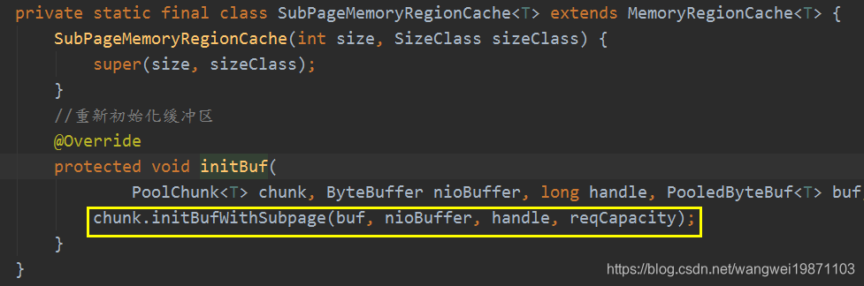
一种是NormalMemoryRegionCache的，对应normal类型：
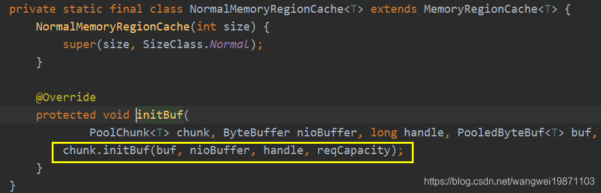
这个跟我们正常内存分配流程最后的一样，子页的是调用PoolChunk的initBufWithSubpage，normal类型是initBuf：
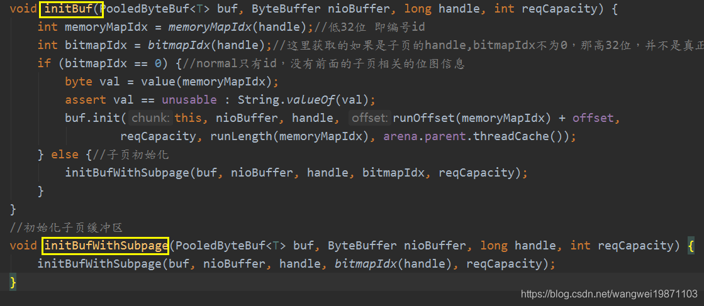
当然最开始的时候队列里面没有实体，就返回false啦，然后走正常的内存分配流程。
这个是在缓冲区调用了release的时候会尝试缓存：
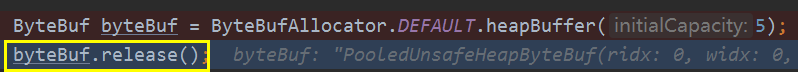
如果能回收缓冲区的话，最终调用deallocate：
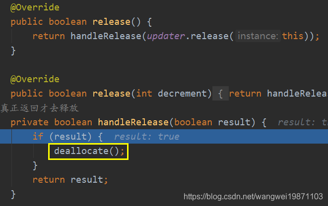
其实就是释放内存资源，属性重新设置回默认，自己也回收到对象池里。
141protected final void deallocate() {3 if (handle >= 0) {4 final long handle = this.handle;5 this.handle = -1;6 memory = null;7 // ---往下看---8 chunk.arena.free(chunk, tmpNioBuf, handle, maxLength, cache);9 // ---end---10 tmpNioBuf = null;11 chunk = null;12 recycle();//放进池里面13 }14}131// PoolArena.java2
3void free(PoolChunk<T> chunk, ByteBuffer nioBuffer, long handle, int normCapacity, PoolThreadCache cache) {4 ...5 SizeClass sizeClass = sizeClass(normCapacity);6 // ---往下看---7 if (cache != null && cache.add(this, chunk, nioBuffer, handle, normCapacity, sizeClass)) {8 // cached so not free it. 缓存成功就返回9 return;10 }11 ...12 }13}首先进行了尺寸类型的获取，然后如果是有缓存的，就尝试添加到缓存，如果添加成功就返回，不然就要释放块内存了。
add：获取缓存，尝试添加
421boolean add(PoolArena<?> area, PoolChunk chunk, ByteBuffer nioBuffer,2 long handle, int normCapacity, SizeClass sizeClass) {3 4 // 获取缓存5 MemoryRegionCache<?> cache = cache(area, normCapacity, sizeClass);6 if (cache == null) {7 return false;8 }9 // 添加10 return cache.add(chunk, nioBuffer, handle);//存在就尝试添加11}12
13
14// cache：即是根据尺寸类型进行获取。15private MemoryRegionCache<?> cache(PoolArena<?> area, int normCapacity, SizeClass sizeClass) {16 switch (sizeClass) {17 case Normal:18 return cacheForNormal(area, normCapacity);19 case Small:20 return cacheForSmall(area, normCapacity);21 case Tiny:22 return cacheForTiny(area, normCapacity);23 default:24 throw new Error();25 }26}27
28// add： 这里开始尝试添加，会先将要缓存的数据封装成一个实体，然后尝试放进队列里，如果队列满了，29// 放不了，就把实体回收，返回false。如果能放，就直接返回true。30public final boolean add(PoolChunk<T> chunk, ByteBuffer nioBuffer, long handle) {31 //获取一个entry32 Entry<T> entry = newEntry(chunk, nioBuffer, handle);33 //放进缓存队列34 boolean queued = queue.offer(entry);35 if (!queued) {36 //不成功就立刻回收entry37 // If it was not possible to cache the chunk, immediately recycle the entry38 entry.recycle();39 }40 //返回是否入队成功41 return queued;42}至此添加到缓存讲完了， 其实就是缓冲区没用被引用的时候就会添加到线程本地缓存，以便于下一次用可以直接拿出来初始化，不需要进行内存分配算法了，提高了效率 。
其实就是清空缓存，但是值在缓存尝试分配后，如果到达分配的阈值就会开始清除，都分配了8k次了，如果还有剩下的，基本就是release后很久就没被复用的内存，这样的内存放久了就等于内存泄露，所以还是要回收掉。
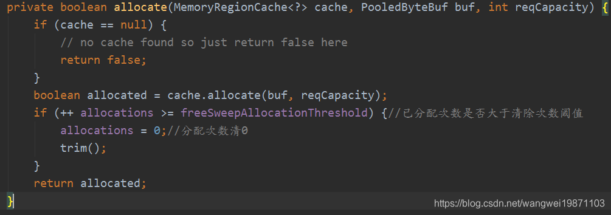
所有数组都要进行清除：
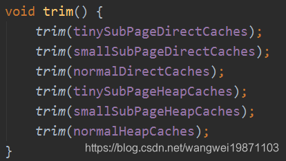
数组中的所有MemoryRegionCache都要清除：
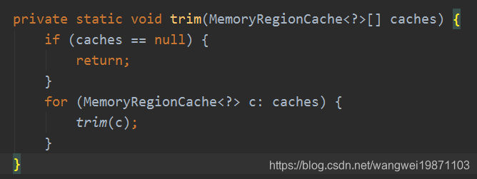
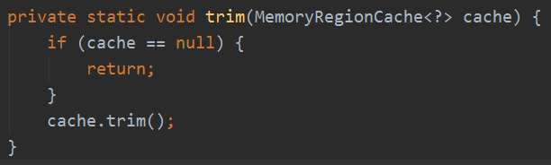
首先获取要释放的数量，没分配过也有size个，没关系呀，后面会判断能否取从队列里取，取不到说明没了，就跳出来了，不会执行剩下的循环。当然分配出去的就要减掉啦。
91public final void trim() {2 int free = size - allocations;//还存在队列里的数量3 allocations = 0;4
5 // We not even allocated all the number that are6 if (free > 0) {7 free(free, false);8 }9}free，可以看到，主要还是考从队列里取，去完释放完为止，返回释放的个数。
131private int free(int max, boolean finalizer) {2 int numFreed = 0;3 for (; numFreed < max; numFreed++) {4 Entry<T> entry = queue.poll();5 if (entry != null) {6 freeEntry(entry, finalizer);7 } else {8 // all cleared 如果发现null了说明释放完了，不一定要遍历完max9 return numFreed;10 }11 }12 return numFreed;13}freeEntry。
131private void freeEntry(Entry entry, boolean finalizer) {2 PoolChunk chunk = entry.chunk;3 long handle = entry.handle;4 ByteBuffer nioBuffer = entry.nioBuffer;5
6 if (!finalizer) {7 // recycle now so PoolChunk can be GC'ed. This will only be done if this is not freed because of8 // a finalizer.9 entry.recycle();//回收entry10 }11
12 chunk.arena.freeChunk(chunk, handle, sizeClass, nioBuffer, finalizer);13} 最终是调用PoolArena的freeChunk进行回收的。如果整个PoolThreadCache被回收了，会使得finalizer=true：
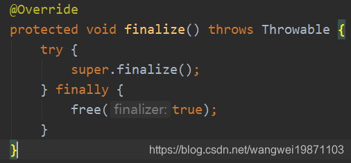
其实这个跟刚开始的PoolArena的free里面最后释放的一样：
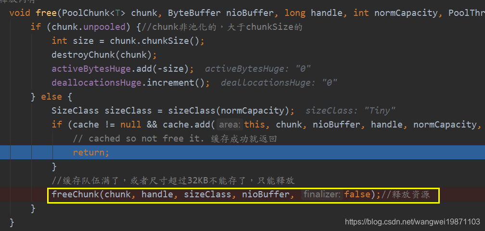
PoolArena的freeChunk，先统计释放的数量，然后调用chunk块的PoolChunkList释放，根据情况再看是否要释放chunk块。
301void freeChunk(PoolChunk<T> chunk, long handle, SizeClass sizeClass, ByteBuffer nioBuffer, boolean finalizer) {2 final boolean destroyChunk;3 synchronized (this) {4 // We only call this if freeChunk is not called because of the PoolThreadCache finalizer as otherwise this5 // may fail due lazy class-loading in for example tomcat.6 if (!finalizer) {//增加释放次数7 switch (sizeClass) {8 case Normal:9 ++deallocationsNormal;10 break;11 case Small:12 ++deallocationsSmall;13 break;14 case Tiny:15 ++deallocationsTiny;16 break;17 default:18 throw new Error();19 }20 }21 // ---往下看---22 destroyChunk = !chunk.parent.free(chunk, handle, nioBuffer);//返回是否要销毁23 }24 if (destroyChunk) {//是否释放块25 26 // ---往下看---27 // destroyChunk not need to be called while holding the synchronized lock.28 destroyChunk(chunk);29 }30} PoolChunkList#free，最终还是要到chunk中释放。释放完之后看使用率进行移动并从块列表中删除，如果移动到q000不能往前移了，就说明块没利用率，没说没任何使用，得释放了，返回false。否则返回true。
131boolean free(PoolChunk<T> chunk, long handle, ByteBuffer nioBuffer) {2 // ---往下看---3 chunk.free(handle, nioBuffer);//块释放内存4 if (chunk.usage() < minUsage) {//小于最小使用率的5 // ---往下看---6 remove(chunk);//从当前快列表中删除7 8 // ---往下看---9 // Move the PoolChunk down the PoolChunkList linked-list.10 return move0(chunk);//给上一个快列表11 }12 return true;13}PoolChunk的free，这里做的事比较多，首先就是根据句柄
handle获取相应的信息，然后如果是子页类型的就去释放子页的部分空间，如果释放完后发现子页的内存还有被使用，那就返回，否则就把子页回收了，把内存映射索引对应的深度设置回初始深度值，更新其父节点深度。281void free(long handle, ByteBuffer nioBuffer) {2int memoryMapIdx = memoryMapIdx(handle);//获取内存映射索引3int bitmapIdx = bitmapIdx(handle);//获取位图索引4if (bitmapIdx != 0) { // free a subpage 表示有子页要释放的操作，normal类型是没有的6PoolSubpage<T> subpage = subpages[subpageIdx(memoryMapIdx)];//获取子页7assert subpage != null && subpage.doNotDestroy;8// Obtain the head of the PoolSubPage pool that is owned by the PoolArena and synchronize on it.10// This is need as we may add it back and so alter the linked-list structure.11PoolSubpage<T> head = arena.findSubpagePoolHead(subpage.elemSize);12synchronized (head) {13// ---往下看---14if (subpage.free(head, bitmapIdx & 0x3FFFFFFF)) {//释放位图索引所在的内存，返回true表示子页内存有被用，不用销毁，直接返回，否则表示子页内存没被使用了，可以被销毁了15return;16}17}18}19freeBytes += runLength(memoryMapIdx);//回收空间数量20setValue(memoryMapIdx, depth(memoryMapIdx));//把内存映射索引设置回初始值21// ---往下看---22updateParentsFree(memoryMapIdx);//更新父节点的深度23if (nioBuffer != null && cachedNioBuffers != null &&25cachedNioBuffers.size() < PooledByteBufAllocator.DEFAULT_MAX_CACHED_BYTEBUFFERS_PER_CHUNK) {26cachedNioBuffers.offer(nioBuffer);//如果使用了nioBuffer，就放入缓存cachedNioBuffers27}28}PoolSubpage的free，释放位图中的索引位，可以给下一次申请的直接用，如果可用的数量是
0，即已经是用完的子页的话，重新加入到head后。返回true，说明不需要删除子页，又复用了。如果可用数量不为0，释放后数量页等于最大数量，说明这个子页现在没有任何内存被分配出去了，那就等于这个子页没什么用了， 但是如果就只剩head了，那就不删除了，直接返回，删除的话后面申请的又的重新创建，浪费时间。如果除了head还有其他子页，那就从双向循环列表中删除掉当前子页，并设置需要销毁标志doNotDestroy=false，返回false，否则就返回true。311boolean free(PoolSubpage<T> head, int bitmapIdx) {2if (elemSize == 0) {3return true;4}5int q = bitmapIdx >>> 6;//获取位图在数组中的索引6int r = bitmapIdx & 63;//获取位图内部索引7assert (bitmap[q] >>> r & 1) != 0;8bitmap[q] ^= 1L << r;//异或，设置为09setNextAvail(bitmapIdx);//将索引释放，下一个可以直接获取整个索引11if (numAvail ++ == 0) {//如果已经使用完的子页，有空间了再加到head后13addToPool(head);14return true;15}16if (numAvail != maxNumElems) {//还有其他内存在使用18return true;//还在使用，返回true19} else {//不使用了，所以能分配的就等于最大分配数20// Subpage not in use (numAvail == maxNumElems)21if (prev == next) {//只有一个head了，那不能删除22// Do not remove if this subpage is the only one left in the pool.23return true;24}25//如果有其他子页的话，删除当前子页26// Remove this subpage from the pool if there are other subpages left in the pool.27doNotDestroy = false;//设置要销毁28removeFromPool();29return false;30}31}updateParentsFree，这个就是申请时候的更新逆运算啦，反过来理解就好：
181private void updateParentsFree(int id) {2int logChild = depth(id) + 1;3while (id > 1) {4int parentId = id >>> 1;5byte val1 = value(id);6byte val2 = value(id ^ 1);7logChild -= 1; // in first iteration equals log, subsequently reduce 1 from logChild as we traverse up8if (val1 == logChild && val2 == logChild) {//两个子节点都被使用的情况下10setValue(parentId, (byte) (logChild - 1));//父节点只要将子节点深度-1就好11} else {//只用了其中一个，就需要设置为两个子节点中最小的即可12byte val = val1 < val2 ? val1 : val2;13setValue(parentId, val);14}15id = parentId;//继续向上找父节点17}18}
remove，如果发现
chunk块列表的使用率小的话，就从块列表中删除，并准备往前移。141private void remove(PoolChunk<T> cur) {2if (cur == head) {//是头结点处理3head = cur.next;4if (head != null) {5head.prev = null;6}7} else {//非头结点处理8PoolChunk<T> next = cur.next;9cur.prev.next = next;10if (next != null) {11next.prev = cur.prev;12}13}14}
move0：往以一个块列表移，如果发现符合条件就加入块列表，否则就继续往前移，直到移到
q000块列表位为止，返回false，表示要销毁这个块。91private boolean move0(PoolChunk<T> chunk) {2if (prevList == null) {//当前块列表没有前一个块列表了，也就是Q0，可以直接删除块释放内存3// There is no previous PoolChunkList so return false which result in having the PoolChunk destroyed and4// all memory associated with the PoolChunk will be released.5assert chunk.usage() == 0;6return false;7}8return prevList.move(chunk);//移动到前一个快列表中9}
destroyChunk，这里就是真正的释放块内存了，两种情况，一种是堆内存，这个当然就给虚拟机处理器，所以实现方法是空的：
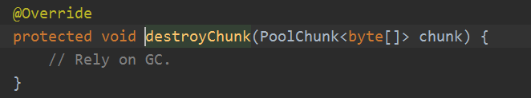
堆外内存的话就是根据是否有清理器来释放，其实就是直接释放堆外内存。
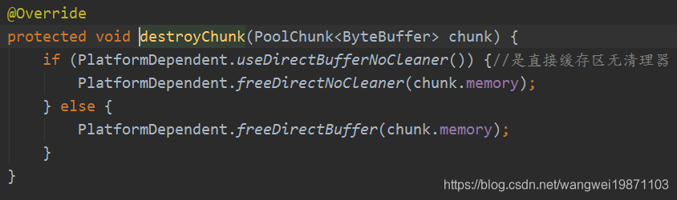
如何才可以在线程结束的时候调用方法呢，其实就是包装成FastThreadLocalRunnable的效果：
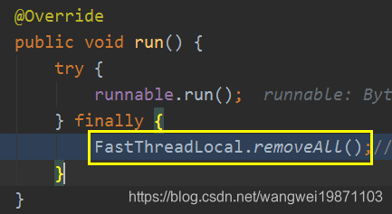
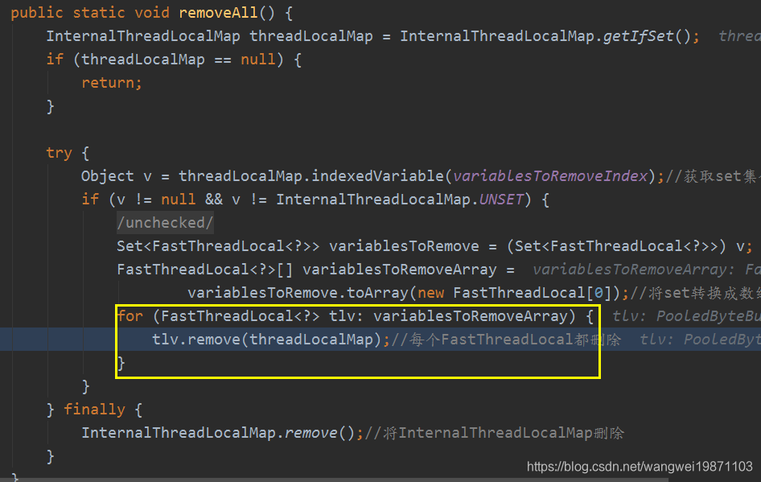
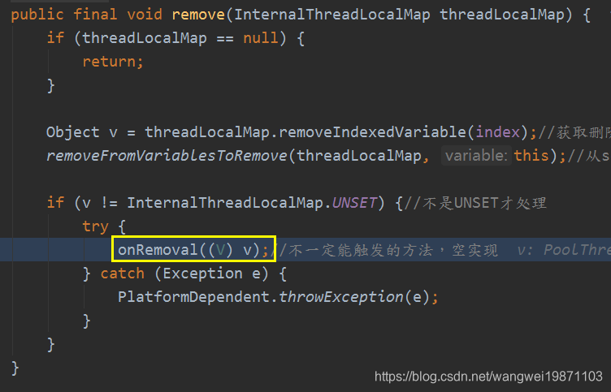
前面有说PoolThreadLocalCache在线程执行完会自动释放缓存，其实就是onRemoval方法。
41protected void onRemoval(PoolThreadCache threadCache) {3 threadCache.free(false);4}PoolThreadCache的free(boolean finalizer)：里面也是每个缓存数组都释放，返回释放的总数量，然后对应的计数减少。
251void free(boolean finalizer) {2// As free() may be called either by the finalizer or by FastThreadLocal.onRemoval(...) we need to ensure3// we only call this one time.4if (freed.compareAndSet(false, true)) {5int numFreed = free(tinySubPageDirectCaches, finalizer) +6free(smallSubPageDirectCaches, finalizer) +7free(normalDirectCaches, finalizer) +8free(tinySubPageHeapCaches, finalizer) +9free(smallSubPageHeapCaches, finalizer) +10free(normalHeapCaches, finalizer);11if (numFreed > 0 && logger.isDebugEnabled()) {13logger.debug("Freed {} thread-local buffer(s) from thread: {}", numFreed,14Thread.currentThread().getName());15}16if (directArena != null) {18directArena.numThreadCaches.getAndDecrement();19}20if (heapArena != null) {22heapArena.numThreadCaches.getAndDecrement();23}24}25}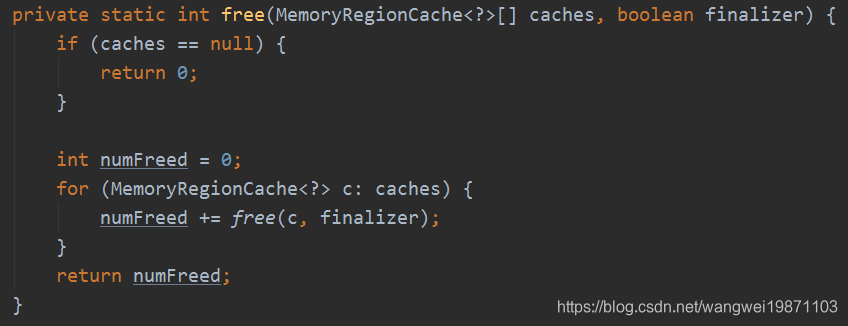
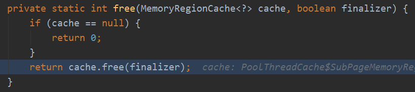
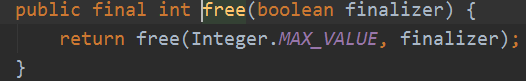
最终还是到这里，其实就是返回所有回收的总数量：
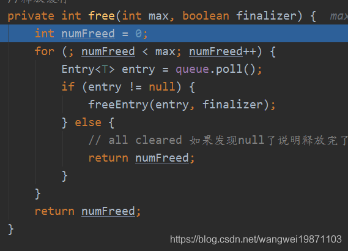
现在我们知道了，其实最终释放的是整一个块。内存的申请和释放可以从缓存中获取，缓存又存在于线程本地变量中，当然线程回收了，会回收线程本地变量，就会释放对应的缓存，当然不一定会把块释放了，因为有可能多个线程对应一个块，其他线程还在使用块。